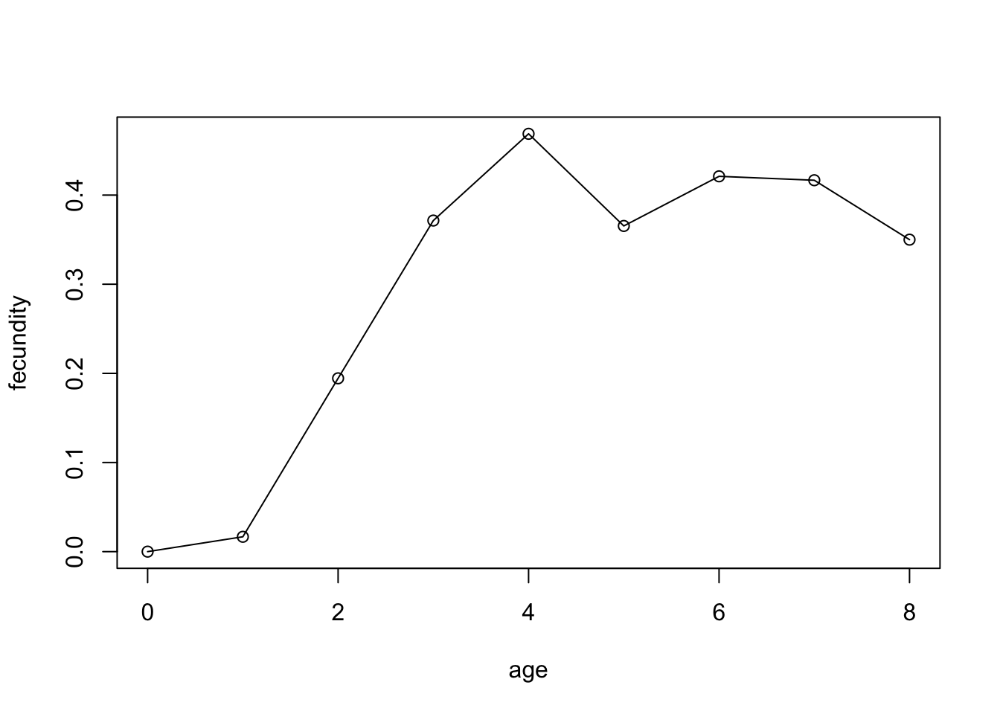

Yearly variation in the numbers of breeding Darwin’s finches (Geospiza fortis and G. scandens)
The breeding success of Darwin’s finches on the Galapagos islands depends to a large extent on weather. During dry years the nesting success can be very low, causing large fluctuations in bird numbers from year to year. The following table gives the number of breeding pairs in two finch species during 1976-1991.
| year | G. fortis pairs | G. scandens pairs |
|---|---|---|
| 1976 | 509 | 160 |
| 1977 | 0 | 86 |
| 1978 | 129 | 103 |
| 1979 | 123 | 70 |
| 1980 | 136 | 129 |
| 1981 | 171 | 130 |
| 1982 | 74 | 103 |
| 1983 | 405 | 253 |
| 1984 | 332 | 217 |
| 1985 | 0 | 0 |
| 1986 | 32 | 20 |
| 1987 | 214 | 55 |
| 1988 | 0 | 8 |
| 1989 | 0 | 5 |
| 1990 | 120 | 13 |
| 1991 | 241 | 42 |
Calculate the mean number of breeding pairs (\(\bar x\)), standard deviation (\(s\)), variance (\(s^2\)) and coefficient of variation (\(C.V.\)) for the two species. Which of the
species is more sensitive to weather fluctuations? If we denote the
number of breeding pairs in a given year with \(x_i\), then the required formulas are as
follows.
\[ \begin{align} \bar x & = \frac{\sum_{i=1}^{n}x_i}{n} \\ s^2 & = \frac{\sum_{i=1}^{n}(x_i-\bar x)^2}{n-1} \\ s & = \sqrt{s^2} \\ C.V. & = \frac{s}{\bar x} \end{align} \]
The coefficient of variation expresses variation within a variable
relative to the magnitude of the variable. This is important because
variance increases with the magnitude of the measured variable. The
standardization allows us to compare variation across different
variables (such as length of earthworms and length of anacondas), see here
for more information.
Answer:
| species | mean | \(s\) | \(s^2\) | \(C.V.\) |
|---|---|---|---|---|
| G. fortis | 155.38 | 153.05 | 23423.45 | 0.99 |
| G. scandens | 87.12 | 76.48 | 5849.85 | 0.88 |
Geospiza fortis is more sensitive to weather fluctuations
because it has a higher \(C.V.\)
Note that it could actually be argued that the data reported here constitute the whole population, in which case the appropriate measure of variance is not the sample variance but the population variance, which we calculate according to \[ \sigma^2 = \frac{\sum_{i=1}^{n}(x_i-\bar x)^2}{n}. \]
Fecundity of the chamois (Rupicapra rupicapra) in New Zealand
The chamois gives birth during a short period in spring (birth pulse, discrete breeder). 275 females from all age groups were shot during this period to study female fecundity (these are hunting data). Females that were pregnant, had active milk glands, or bore signs of previous pregnancy were considered as reproductively active during that particular season. Litter size is supposed to be 1, and the sex ratio among the new born is 1/2 (equally many sons and daughters). The following table gives the number of reproductively active females in each age group.
| age in years (\(x\)) | no. shot (\(f_x\)) | no. reprod. active (\(B_x\)) |
|---|---|---|
| 0 | 0 | 0 |
| 1 | 60 | 2 |
| 2 | 36 | 14 |
| 3 | 70 | 52 |
| 4 | 48 | 45 |
| 5 | 26 | 19 |
| 6 | 19 | 16 |
| 7 | 6 | 5 |
| 8 | 10 | 7 |
Calculate fecundity, i.e., the number of daughters per female. This can be calculated as \[ m_x = B_x /(2f_x), \] where \(f_x\) is the number of shot females that were aged \(x\) years old, and \(B_x\) is the number of those that were considered reproductively active. The \(2\) in the denominator stems from the fact that on average only half of the offspring are female.
Draw a graph showing fecundity as a function of age. Explain what you see. When is a chamois female fully fecund? Calculate average fecundity over all fully fecund age groups.
Answer:
| age in years (\(x\)) | no. shot (\(f_x\)) | no. reprod. active (\(B_x\)) | age-specific fecundity (\(m_x\)) |
|---|---|---|---|
| 0 | 0 | 0 | 0.000 |
| 1 | 60 | 2 | 0.017 |
| 2 | 36 | 14 | 0.194 |
| 3 | 70 | 52 | 0.371 |
| 4 | 48 | 45 | 0.469 |
| 5 | 26 | 19 | 0.365 |
| 6 | 19 | 16 | 0.421 |
| 7 | 6 | 5 | 0.417 |
| 8 | 10 | 7 | 0.350 |

To be able to answer this question, we have to clarify what is meant with “fully fecund”. We can see that fecundity initially increases with age. One could argue that a chamois becomes fully fecund at age 3 and that fecundity from then onward somewhat fluctuates, which could simply be the result of the relative small size of the sample. If we accept this viewpoint, then the average fecundity of fully fecund females equals \(0.399\) (the arithmetic mean over the last six age groups).
Life table analysis in snails
Here is a life table for a snail population:
| age in years (\(x\)) | \(a_x\) | \(m_x\) |
|---|---|---|
| 0 | 500 | 0.0 |
| 1 | 400 | 2.5 |
| 2 | 40 | 3.0 |
| 3 | 0 | 0.0 |
Complete the life table analysis by calculating \(l(x)\), \(R_0\), and \(T_c\), and estimate \(r\).
Answer:
| age in years (\(x\)) | \(a_x\) | \(l_x\) | \(m_x\) | \(l_x m_x\) | \(x l_x m_x\) |
|---|---|---|---|---|---|
| 0 | 500 | 1.00 | 0.0 | 0.00 | 0.00 |
| 1 | 400 | 0.80 | 2.5 | 2.00 | 2.00 |
| 2 | 40 | 0.08 | 3.0 | 0.24 | 0.48 |
| 3 | 0 | 0.00 | 0.0 | 0.00 | 0.00 |
With this, we can calculate the net-reproductive ratio \(R_0\) as
\[ R_0 = \sum_{x=0}^{x_{\rm max}}l_x m_x=2.24. \] Furthermore, \[ \sum_{x=0}^{x_{\rm max}}x l_x m_x=2.48. \]
Now we can calculate the cohort generation time \(T_c\) as \[ T_c = \frac{\sum_{x=0}^{x_{\rm max}}x l_x m_x}{R_0} = \frac{2.48}{2.24} = 1.107. \]
Using the formula \[ r \approx \frac{\ln R_0}{T_c}=\frac{\ln(2.24)}{1.107} = 0.729 \]
we obtain an approximate value for the intrinsic \(r\). We can conclude that this snail species shows a positive growth rate and is expected to increase in size rapidly.